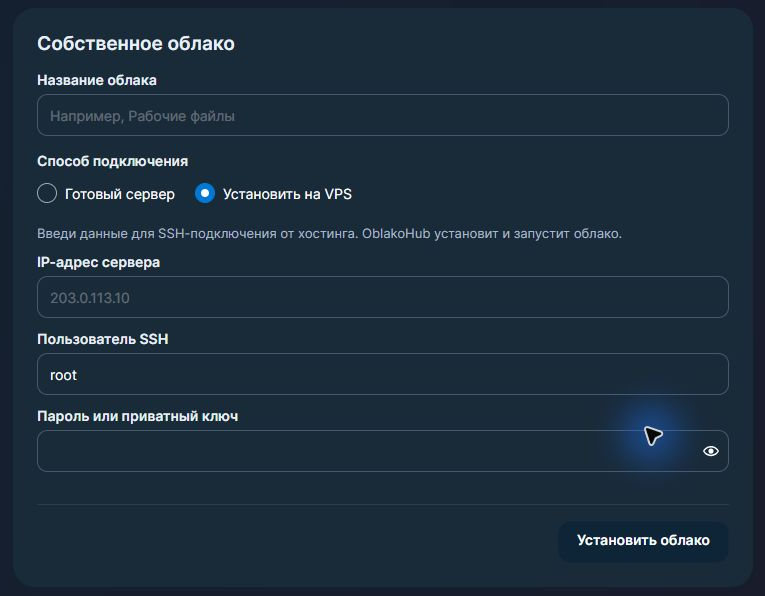
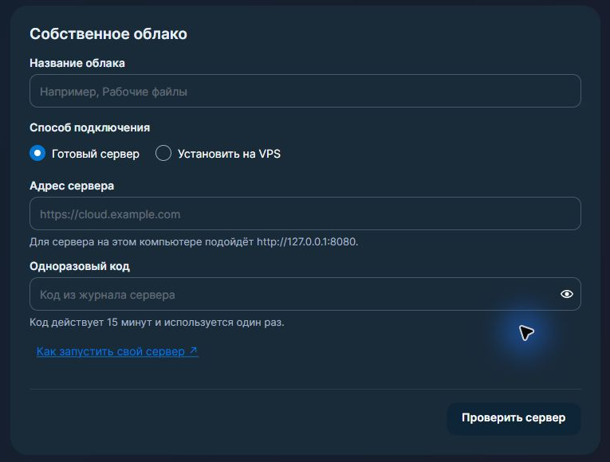

1 Подготовка данныхДля собственного облака понадобится сервер. Можно арендовать VPS — это виртуальный компьютер в интернете, на котором будут храниться ваши файлы.
После аренды откройте письмо от хостинга или панель управления VPS. Для подключения понадобятся три вещи.
IP-адрес сервера — публичный IPv4, указанный хостингом.Пользователь SSH — логин для входа на сервер, часто это root.Пароль для этого пользователя. Если вы настраивали вход по SSH-ключу, подготовьте свой приватный ключ.
Доступ из интернета Если в панели хостинга включён сетевой экран, убедитесь, что он разрешает входящие подключения по TCP на порты 80 и 443. Они нужны установщику для настройки HTTPS и доступа к облаку.
2 Запуск установкиОткройте приложение OblakoHub.
Нажмите «Добавить облако» и выберите «Собственное облако» .
Придумайте название, например «Мой личный сервер», и выберите «Установить на VPS» .
Введите IP-адрес сервера и пользователя SSH из первого шага. В поле «Пароль или приватный ключ» введите пароль или вставьте содержимое файла приватного ключа.
Нажмите «Установить облако» .

Форма «Установить на VPS» в клиенте OblakoHub.
При первом подключении OblakoHub покажет отпечаток SSH-ключа сервера . Это короткая строка, по которой можно убедиться, что клиент подключается именно к вашему VPS. Сверьте её с отпечатком в консоли VPS у хостинга. Если они совпадают, нажмите «Доверять и установить» . Дальше приложение само настроит сервер.
3 Выбор объёма облакаПосле установки появится раздел «Место для облака» . Выберите, сколько места на сервере смогут занять ваши файлы.
«Задать лимит» — оставьте рекомендованный объём или укажите свой в гигабайтах.«Без лимита» — облако сможет занять всё свободное место на диске. Если диск заполнится, серверу и другим приложениям может не хватить места для работы.
Завершите подключение. В боковой панели OblakoHub появится облако с названием, которое вы выбрали на втором шаге.
1 Установи Docker и GitДля этих команд подойдёт VPS с Ubuntu и публичным IPv4. В панели хостинга открой входящие TCP-порты 80 и 443 , затем открой терминал VPS.
Терминал на VPS Скопировать
wget -O install-docker.sh https://raw.githubusercontent.com/vZidv/OblakoHub-Server/main/install-docker.sh &&
bash install-docker.sh
Если на VPS нет wget Скачай и запусти тот же скрипт через curl.
Терминал на VPS Скопировать
curl -fLo install-docker.sh https://raw.githubusercontent.com/vZidv/OblakoHub-Server/main/install-docker.sh &&
bash install-docker.sh
2 Запусти сервер
Терминал на VPS Скопировать
git clone https://github.com/vZidv/OblakoHub-Server.git &&
cd OblakoHub-Server &&
bash install.sh
Для подключения Введи IPv4 по запросу. Дождись строк Адрес подключения и Одноразовый код (15 минут) . Обе понадобятся в приложении.
Если код истёк До первого подключения снова выполни bash install.sh в папке проекта.
3 Подключи облако в OblakoHubОткрой в клиенте Добавить облако → Собственное облако → Готовый сервер .

Ручная установка. Сюда нужно вставить HTTPS-адрес и код, которые вывел установщик.
Введи название, адрес сервера и одноразовый код. Нажми Проверить сервер .
Код действует 15 минут. Когда появится раздел Место для облака , выбери лимит и заверши подключение.

 Google Drive
Dropbox
Твой сервер
Google Drive
Dropbox
Твой сервер